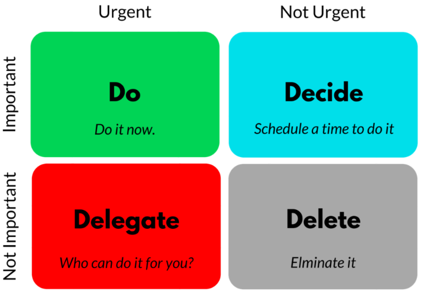
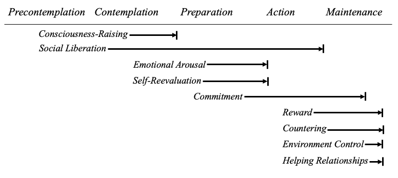

7 Theories
7.1 Pagmalian Effect
Also known as the Rosenthal Effect
Ben Dean, Free Teleseminar, February 20, 2020 @ 5 PM - 7 PM
The phenomena in which the greater the expectation placed upon people the better their performance. Grounded in research.
7.2 Parkinson’s Law
Ben Dean, Free Teleseminar, February 20, 2020 @ 5 PM - 7 PM
Work expands to fill the time available.
Example
If a client has 10 years to get something done, they will wait 9 years and 10 or 11 months and then do it.
7.3 Eisenhower Matrix
Ben Dean, Free Teleseminar, February 20, 2020 @ 5 PM - 7 PM

President Eisenhower famously observed that “what is important is seldom urgent and what is urgent is seldom important.” This was known as the Eisenhower principle and it was operationalized as the Eisenhower Matrix. The Eisenhower Matrix explains that coaching works because it is hard to work on important goals when there is no urgency. Coaching also works because it is hard to maintain momentum alone.
1. Urgent and Important
Parkinson’s law and the goals that people achieve are in this cell. The impossibly busy clients will often live their life largely here. For these clients there are so many things in this cell that they have to triage to figure out what to do first. Some examples include raising kids, taking care of your grandkids, saving for retirement, keeping the boss happy, looking for a job.
2. Important but Not Urgent
This is the cell where clients can change their life. It is here that clients finally lose the 20 lbs they have wanted to lose for years; they finally get out of a bad marriage or go see a marriage counselor, go get individual therapy, start saving for retirement, etc. Every single important goal clients have ever met and every important change they have ever made in their life started in this cell. But the problem with this cell is that it is NOT urgent.Clients are already incredibly busy and all of their energy is taken up surviving in cell 1. Many clients have 90+ visions in sitting here that they never get to or can’t commit to because they don’t have the energy, time, or money to do it. Clients don’t get to them but often they are the most important things that they can do. The people that we admire are the ones who accomplish goas in this cell. This is what makes action coaching does powerful, it takes what is in cell 2 and puts it in cell 1, allowing clients to get it done. Clients accomplish these goals because coaches provide structure and accountability and meeting 1x a week with anybody will turn it into a priority. If clients are not alone, the goal will start fitting in with the other things in cell 1 and it will not get pushed out of cell 1.
7.4 Theories of Change
Changing for Good
- The Processes of Change
- Stages of Change
There are six well-defined stages of change:
- Precontemplation
- Contemplation
- Preparation
- Action
- Maintenance
Termination
Effective Processes in Stage Changes

Precontemplation
- Problem or Preference?
- Do you discuss your behavior pattern?
- Are you well informed about your behaviors?
- Are you willing to take responsibility for the consequences of your behavior?
Answer the above three questions truthfully, and you will begin to see the distinction between problem behaviors and lifestyle choices. If you answer no to one or more of the questions, you are probably in the precontemplation stage.
- Moving from Precontemplation to Contemplation
- Consciousness-Raising
- Becoming aware of defenses
- Defenses include:
Making the least of it: Denial and minimization.
“Good excuses”: Rationalization.
Turning outward: Projection and displacement. Displacement is also known as scapegoating, it is a form of turning outward, in which we take out anger, depression, frustration on a substitute object or person, one that is available and safe to attack. Another form of displacement, known as project, occurs when we diagnose in someone else those problems that we carry ourselves.
Turning inward: Internalization. The result is habitual self-accusation, self-blame, low self-esteem, and sometimes depression.
- Checking our defenses
- Consciousness-raising self-assessment
- Becoming aware of defenses
- Social Liberation
- Ask who is on your side
What do they gain if you and people like you change? Do they want to rob you of your freedom, or to create a healthier society and a healthier you.
- Ask whose side you are on
If you could liberate people from smoking, overeating, and overdrinking, would you use this power? Would you rather make a donation to the National Cancer Society, etc. or the Tabacco Industry?
- Seek and welcome outside influences
- Social liberation self-assessment
- Helping Relationships
- Don’t push someone into action
- Don’t nag
- Don’t enable
- Using helping relationships
As a precontemplator, you can take advantage of people who care about you by letting them help you.
- Ask others to identify your defenses
- Become aware of your defenses
As you realize that your defenses do not fool others, you will become less invested in fooling yourself.
- Help others to help you
Tell your helpers that you are trying to be more open and less defensive, but that you are nto ready for action.
- Helping relationships self-assessment
- Consciousness-Raising
Because the helping relationship is so critical to self-changers, we will review helping skills as we discuss every stage of change, for the benefit of people who care for and are close to self-changers.
Contemplation
An awareness of this ambivalence can prevent you from falling into one of the many traps that are the negative responses to contemplation. Here are some of them.
- The search for absolute certainty
- Waiting for the magic moment
- Wishful thinking
- Premature action
The search for absolute certainity, waiting for the magic moment, wishful thinking, and premature action are all “negative processes” delay tactics that retard movement through the cycle of change.
- Moving from Contemplation to Preparation
- Emotional Arousal
- Go to the movies
- Make your own propaganda
- Use your imagination
- Emotional arousal self-assessment
There are a variety of emotional arousal techniques that can be useful. Above are three.
- Return to Consciousness
- Ask the right questions
- How many calories does an average forty-year-old male (or female) need to consume in an average day?
- How long must you jog to lose one pound?
- How can you tell if you are a problem drinker?
- Define your own goals
Exactly what behavior(s) do I wish to change? How can I measure and track my progress? If you cannot think of a way to measure your progress, the chances are good that your goal is too vague.
- Collect the right data
With most problem behaviors, the frequency of the episodes changes before their intensity does. What we chooses to monitor, then, can make a major difference in our feeling progress.
- Functional analysis: learn your ABC’s
This “functional analysis” can illuminate what is controlling the parts of your life that seem out of control. It is easy as A (antecedents) B (behavior) C (consequences). Antecedents can trigger a problem behavior, while consequences reward or strengthen it.
A (antecendent) –> B(behavior) –> C (consequences)
To be most helpful, your functional analysis should focus not only on the external events that precede an follow a behavior, but also the internal events that may be controlling it. Pay attention to what you tell yourself before engaging in an undesirable habit.
What am I telling myself that leads to engaging in this problem behavior?
What self-statements help them to justify the lack of control?
Make a written list of the statements you make to justify your problem behavior. You may be surprised, and you will certainly move toward taking action.
If you progressed from precontemplation to contemplation, through consciousness-raising you have already become aware of your defenses and resistances. Consciousness-raising remains important now as you gain more knowledge about the problem you are defending.
- Ask the right questions
- Self-reevaluation
- Think before you act
- Create a new self-image
Try a scenario in which you don’t change.
Try a scenario in which you do change.
- Make a decision
- Consequences of change of self
- Consequences of change to others
- Reactions of sefl as a result of change
- Reactions of others as a result of change
- Self-reevaluation self-assessment
Successful self-reevaluation leaves you feeling, thinking, and believing that life would be substantially improved if you didn’t have those behaviors.
- Helping Relationships
- Warmth
- Solicit input
- Emotional Arousal
Preparation
Your personal reevaluation will look more toward your future self, and less to your problematic past.
Moving from Preparation to Action
- Continuing Self-Reevaluation
- Turn away from old behavior
Creating new, functional images of your future self will help you let go of the past. Ask yourself: What is my potential if I change? What will it free me up to become? How will my life be enhanced?
- Make change a priority
In the preparation stage you must concentrate on moving this change tast to the top of your list of things to do.
In the preparation stage, you can increase your chances of success by focusing on the future and your new self. The great motivator is a hopeful vision of what your life will be like once you have changed your behavior.
For those in the contemplation stage - there was a clear emphasis on the negative aspects of their addition, these stories kept them in touch with the excitement and danger of drug use.
For those in the preparation stage - fared much better when they focus on positive aspects of life without drugs.
- Commitment
- Make the tough choices
In any case, commitment requires you to have faith in your ability to succeed at the action you have chosen to take.
Commitment and anxiety
Anxiety cannot be conquered, but it can be understood and countered. Here are five commitment techniques that can help you to counter anxiety.
- Take small steps
- Set a date
Choosing a date to begin can help prevent both premature action and prolonged procrastination.
Deciding to delay the date is a good sign that you are still in the contemplation stage.
- Go public
- Prepare for a major operation
The date you set to make your change is as important as one for coronary bypass surgery or chemotherapy.
- Create your own plan of action
To a large extent, success depends on using a plan that you believe works; if you create the plan yourself, that belief becomes much stronger.
- Helping Relationships
Since preparation usually involves noticeable changes, it is virtually impossible to disguise them from your spouse or close friends. So, if you have not yet enlisted them in your crusade, this is the time to do so.
Offer them instead a comprehensive list of “dos” and “don’ts”.
- Decisional balance
- Continuing Self-Reevaluation
Action
There are a few people who can change a problem behavior without restructuring their lives. Once the commitment to change is made, it is time to move; in the action stage the focus is on the processes of control, countering, and reward, with a continuing emphasis on the importance of helping relationships.
The four above approaches to action all leave self-changers spinning their wheels, unable to proceed.
Taking preparation lightly
Cheap change
Some people are unwilling to make any sacrifices in order to change.
- The myth of the “magic bullet”
More of the same
- Moving from Action to Maintainance
- Countering
- Active diversion
“Keeping busy,” or “refocusing energy.” In selecting your own diversion, your priority should be one that is enjoyable, healthy, and incompatible with your problem. Watching television obviously does little to prevent overeating.
- Exercise
- Relaxation
There are many popular and effective ways to evoke the deep relaxation response. They all share a quiet environment, comfortable position, internal focus, and “letting go.”
- Counterthinking
Replaces troubled thoughts with more positive ones. Irrational thoughts are best countered with a dose of reality. An airplane crash is awful; the sinking of the Titanic was terrible. Although burning the dinner may be inconvenient, it is far from a disaster. Molehills can remain molehills, instead of becoming mountains.
To counter other types of negative thoughts, first ask, “What am I telling myself that is getting me so upset?”
Common to these self-statements is a mode of thinking that is absolutist, rigid, and closed to questionning. If you must do a thing, then there are no logical alternatives for you.
To become more aware of your own tendency to think absolutely, take note of the number of times you say, “I have to …” or “I need …” or “I must …” in a day. How many of these declared needs are truly imperative?
But if we recognize desires as desires - “I would like this toy” - our distress diminishes.
- Assertiveness
Self-changers sometimes feel despondent and helpless in the face of external pressures to maintain their problem behaviors. However, by being assertive, you are exercising your right to communicate your thoughts, feelings, wishes, and intentions clearly therby countering feelings of helplessness.
If nonassertive, passive behavior says that “you count, but I don’t” and aggressive behavior says that “I count, and you don’t”, assertiveness respectfully communicates that “I count just as you do.”
- Countering self-assessment
Counter, substituting healthy responses for problem behaviors, is one of the most powerful processes available to changers. When unprepared self-changers get rid of one problem, such as drug abuse, they replace it with another - often the very distress they began taking drugs to avoid. When you remove troubled behaviors without providing healthy substitutes, the risk of returning to old patterns remains high. Above are five effective countering techniques that self-changers often employ.
- Environment Control
- Avoidance
- Cues
Avoidance is not a permanent solution; eventually you will experience the cues that trigger your problem behavior. To prepare yourself to meet the challenge, you must gradually expose yourself to those cues as you progress through the action stage. Many successful self-changers have found that it helps to first confront problem cues in their imagination.
For example, if your parents are a source of distress, image that youare visiting them, and the first thing they do is criticize you for avoiding them. Visualize yourself breathing deeply, relaxing, and saying, “I understand why you are upset, but I’ve needed more time to myself lately.” Plan how long you are going to remain with them, under what conditions you will leave, and hwo you will continue to counter troubling cues.
As you successfully image your effective responses to problem cues, you will become better prepared to deal with problematic situations when you confront them in real life.
- Reminders
Reminders are equally important for people who are in the action stage. Put NO SMOKING signs in your officek STOP signs on your refridgerator door, RELAX signs by the phone. These reminders may seem artificial and unnatural, but they are like stop signs at busy intersections, useful for controlling behavior.
- Environment control self-assessment
- Countering
Unlike countering, which involves changing one’s responses to a given situation, environment control involves changign the situation itself.
- Reward
- Covert management
“Nice job of relaxing,” or “It feels good to be in control,” or simply, “Way to go.” These healthy self-administred pats on the back are examples of covert management.
- Contracting
A wealthy woman, who had plenty of extra money for shopping and vacations, wrote a contract stating that for every poiund she lost she would donate $20 to CARE.
- Shaping up
Overcomming problems requires that you gradually shape your behavior in a new, desirable direction.
A person can’t overcome agoraphobia all at once.
- Reward self-assessment
Reward would be unnecessary if resisting temaption were its on reward.
- Helping Relationships During Action
- Exercise together
- Buddy up
- Rearrange your home
- Put it in writing
Make sure, too, to specify your helpers’ commitments. This will not be an easy time for them either.
- Get “stroked”
Many of our research participants complain of a lack of steady reinforcement. We encourage them - and you - to elicit rewards from helpers for even small amounts of progress.
Tell your helpers that “strokes” come in many guises: Helpers can brag to others about your progress, or take on a dreaded chore for you. Verbal praise, extra hugs, small presents, back massages, and the like are all useful rewards.
- Don’t take guilt trips
- Keep it positive
We recommend at least three compliments for every criticism.
Maintaining
Two factors are fundamental to successful maintenance: sustained, long-term effort, and a revised lifestyle. The action stage lasts for several months. The first month or two of this period is the most likely time to relapse. While many of the more common temptations occur early in the action stage, you learn to deal with them before moving out of the stage.
During the maintenance, the relatively rarer temptations come into play. They are difficult to anticipate and pose serious threats to your confidence, convictions, and commitment.
The presence of the drug triggered an intense physical craving. And the situation was so charged that Rudy’s old patterns of thinking - rationalization and minimization - returned.
There are three common internal challenges that are closely related to slips, or brief lapses:
- Overconfidence
“I’ve got this beat forever” or “I can handle one”
- Daily temptation
Intentionally and unnecessarily subject yourself to the temptation
- Self-blame
Demoralizing and stymies commitment
Early warning signs may involve a lessening of commitment to the new lifestyle.
- Jot down the difficulties you encountered in your early change efforts. Review the list you made from months ago of the negative aspects of your problem behavior. Keep both lists in a safe place, look at them periodically. If you forget the tremendous effort it took to change, everything begins to look easier than it was and all arguments against induling “just for the weekend” fail.
- Take credit for your accomplishment By not accepting responsibility and credit for liberating yourself, you undermine your self-confidence, your self-esteem, and your commitment.
- Renew your commitment.
At some point, these behaviors aided in handling problems; for a time at least, they seemed under control. Eventually, however, our ill-considered strategies become our problems. To overcome them fully, we must replace our problem behaviors with a new, healthier lifestyle. This strategy begins with the action-stage process of countering, but it doesn’t end there. We can break old patterns by removing drugs from our lives, for example, or avoiding certain relationships. But those who do no more than remove an old habit condemn themselves to a life of longing and deprivation.
- Processes for Maintaining Change
- Keep a healthy distance
- Controlling your environment never signifies weakness but, rather, intelligence, health, and foresight.
- Create a new lifestyle
- Working to create alternative behaviors is one of the most important and rewarding challenges of maintenance.
- Working to create alternative behaviors is one of the most important and rewarding challenges of maintenance.
- Check your thinking
- Again, the process of forgetting is involved. Denial, distortion, and rationalization are the enemies of maintenance.
- You may tell yourself that your drinking wasn’t that bad; that smoking is better than gaining weight, etc.
- Ask one of your helpers to remind you just how serious your problem was. Go back to the pros and cons exercise in Chapter 6.
- Helping Relationships
- Revise your contract
- Put your helper on call
Practice new behavior
Strongly supportive friends can help you practice confronting temptations before they actually occur. This can be accomplished through role playing.
Above all, they can discourage you from making temporary excuses - “Not tonight”, “I have a cold”, “I’m on medication.” These excuses imply that self-changer may be willing to accept an offer to go drinking in the future- another night, when he or she is healthier or off medication.
- Help someone else
Patience and persistence
- Keep a healthy distance
Self-efficacy - a measure of success Self-efficacy refers to how you rate your ability to perform specific tasks related to your problem. In order to assess your level of self-efficacy, first choose a behavior pattern that you want to follow. Then make a list of situations that tempt you to abandon the behavior. For each situation, evaluate just how confident you are that you could still behave the way you want.
For example for drinking:
- When I am on vacation and want to relax. (0-10)
- When I am under work-related stress. (0-10)
- When I am lonely. (0-10)
- When I see others drinking at a bar or party. (0-10)
- When I am depressed. (0-10)
- When I am craving a drink. (0-10)
- When I am hassled by others. (0-10)
- When I am offered a drink in a social situation. (0-10)
- When I feel I need a drink to help cope with life. (0-10)
- When I want to test my will power over drinking. (0-10)
Total confidence (add up your score)
Total number of situations 10
Average level of confidence
Highest confidence Situation #
Lowest confidence Situation #
Once you have made a self-efficacy evaluation, examine your scores. In which situations are you least confident? Is there a pattern to them? Are certain situations especially challenging? You can use this newfound knowledge to develop your own relapse prevention plan. Rather than wishing you were supremely confident, develop a strategy to cope with difficult situations. Use environmental control to avoid the most difficult ones, and countering to handle less threatening temptations.
Relapse
The strength of relapsers is that they usually are willing to risk taking action again in the near future; their initial action gives them strength and courage.
- Ten Lessons of Relapse
- Few changers terminate the first time around
Trial and error is inefficient
Help them learn from their relapse experiences but encourage them to rely on guided learning rather than on trial and error.
For example, just by reading this book you can take advantage of the combined wisdom of thousands of self-changers, laypeople, and pyschotherapists. You can learn to appply the appropriate change process to each stage of change, a lesson that would take years of trial and error to master.
Change costs more than you budgeted
It takes an average of about six months of concerted action before you may be ready to move into maintenance..
Few self-changers are prepared to use five different change processes during action. Even those who are aware of the variety of processes at their disposal believe, at least the first time around that willpower can alone can overcome their problem. Sheer willpower is not enough.
- Using the wrong processes at the wrong time
- Becoming misinformed
Misuing willpower
Many people try to will the unwillable- to change what happened in the past, impotence, for example.
- Substituting one bad behavior for another
- Be prepared for complications
Problems often coexist; changing one can exacerbate another.
Common problems have common solutions; the techniques may vary but the processes remain the same. The processes used to solve smoking problems can be used simultaneously to solve eating problems.
- The path to change is rarely a straight one
- A lapse is not a relpase
Many people do give up as soon as they lapse, because of how they view the event. A corollary belief is that if abstinence is ever broken, willfully or not, the change attempt has been a total failure. Take lapses as signs that you must redouble your self-change efforts.
- Mini-decisions lead to maxi-decisions
You may make any number of what we call “mini decisions” that ultimately have negative consequences. We mentioned some of these earlier: deciding to keep some beer in the house in case compnay drops by. Such mini-decisions can lead you to begin shifting direction away from maintenance and toward relapse.
- Distress precipitates relapse
During times of high distress, you are likely to regress to less mature and rational ways of thinking and behaving.
Social pressure is the other major cause of relapse. Self-changers threaten precontemplators who are not ready to confront their problematic behaviors. Change also threatens people who contemplate chagning but have put it off. You may find some old friends are stubbornly unsupportive; if so, your plan might include steering clear of certain social groups, and making new friends.
- Learning translates into action
- If you can honestly answer yes to all of the above, you are well prepared to recycle through the action and maintenance stages.
- Self-assessment
- Have you identified the major causes of your previous relapse(s)?
- Do you have specific, action-oriented processes to counter the siutations and emotions that induced your relapse?
- Are you more informed about the cycle of change and how it relates specifically to your problem?
- Can you tolerate a slip (lapse) without a total fall (relapse)?
- Are you planning to make change one of your highest priorities for the next three to six months?
- Have you prepared yourself for the possibility of complications and for more than one change at a time?
- Can you put your newfound learning into action?
We have found five factors that distinguish people who rely on self-change alone from those who try psychotherapy after unsuccessful attempts at self-change.
- Seeking professional help
- Ineffective self-change
- Long-term problems
- Recurring problems
- If your honest answer to all these questions is yes, you should seriously consider professional assistance.
- Self-assessment
- Do you feel you have given self-change your best effort?
- Have you tried to learn from your previous self-change efforts?
- Is your problem important enough for you to seek professional help?
- Negative coping
- No helping relationships
- The “Three Unables”
- Unable to understand
- Most people understand what they want to understand and vice versa. Professionals can help remove these perceptual blinders, although unfortunately you might not be aware of having them.
- Unable to apply
- The interpersonal nature of psychotherapy virtually guarantees an ongoing check on wehther the message is being understood and applied.
- Unable to comply
- Unable to understand
- Where to seek help
- The most important factors were:
- Competence
- Clinical experience
- Professional reputation
- Warmth and caring
- The five least important were:
- Specific profession
- Being outside of the client’s social network
- Success with similar patients
- Cost per session
- Research and productivity
- Openness
- The most important factors were:
Termination
How far and how long must you go before you consider your problem to be terminated? There are at least four defining criteria.
- A new self-image
- As the new behavior takes hold, a new self-image, one that feels consistent with the healthier behavior, gradually develops.
- No temptation in any situation
- Solid self-efficacy
- A healthier lifestyle
- The real solution
- Creating a healthier lifestyle involves altering more than your problem.